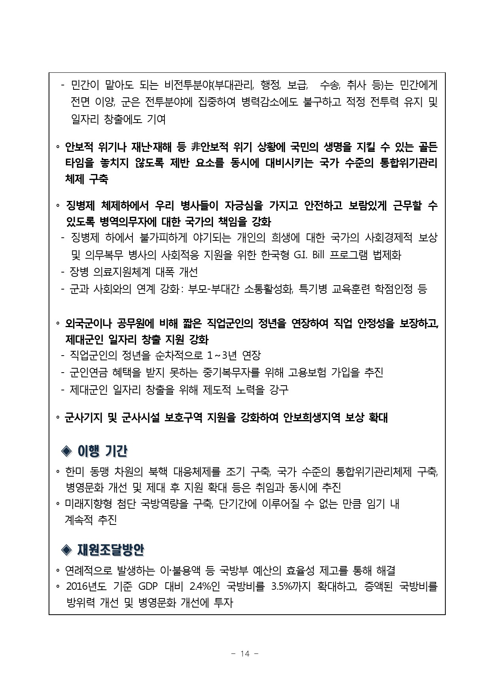
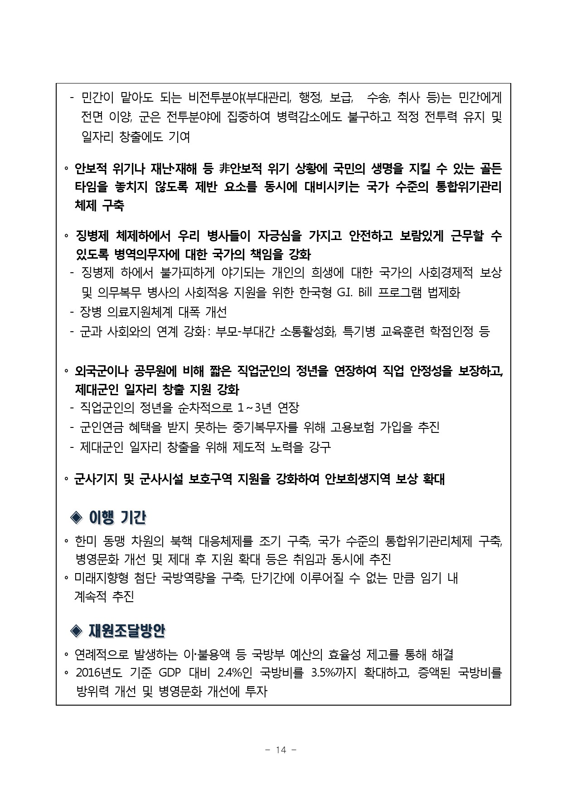

존경하는 국민 여러분!
지난 가을 온 나라를 충격에 빠트린 한마디가 있었습니다.
"부모 잘 만난 것도 능력"이라는 한마디였습니다.
그 말 한마디에 우리는 왜 그토록 분노했습니까?
그것은 우리 젊은이들이 겪어온 서러움, 자식에게 아무 것도 해주지 못한 부모들의 한탄, 그리고 이 나라가 정의롭지 않다는 새삼스러운 각성 때문이었습니다.
국민 여러분!
저는 오늘 국민의 이 분노와 좌절, 그리고 '국가란 무엇인가'에 대한 시민의 목소리를 가슴에 담고, 제19대 대통령 선거에 출마합니다.
19대 대통령의 시대적 책무는 분명합니다.
새 대통령은 취임하자마자 경제위기와 안보위기부터 극복해야 합니다.
새로운 경제성장 전략으로 저성장을 극복해야 합니다.
새 대통령은 양극화, 불평등, 불공정에서 벗어나 온 국민이 함께 더불어 살아가는 따뜻한 공동체, 정의로운 세상을 만들어야 합니다.
‘아이 키우고 싶은 나라’를 만들어 저출산을 극복해야 합니다.
새 대통령은 대한민국 헌법 1조가 천명한 민주공화국, 그러나 민주화 이후 30년이 지나도록 제대로 하지 못한 정의로운 민주공화국을 이뤄내야 합니다.
시대가 부여한 이 길을 가기 위해 저는 대통령 선거에 도전합니다.
대통령이 되어 진정한 민주공화국을 만들겠습니다.
공화국은 '온 국민이 인간의 존엄과 가치를 지키면서 더불어 잘 사는 세상'입니다.
정의, 자유, 평등, 법치가 살아 숨쉬고 시민들이 함께 공공선을 추구하는 세상입니다.
밀린 집세 70만원을 남기고 자살한 송파 세 모녀,
컵라면이 든 가방을 남기고 구의역에서 숨진 비정규직 김모군,
차가운 쪽방에서 폐지 수집으로 연명하는 할아버지 할머니,
이런 불행한 국민이 없는 세상이 제가 꿈꾸는 민주공화국입니다.
정의와 법치가 살아 있는 나라, 공정과 평등이 지켜지는 나라를 만들겠습니다.
"모든 국민은 법 앞에 평등하고... 차별 받지 아니한다"는 헌법 11조는 철저히 지켜질 것입니다.
검찰, 경찰, 국정원, 국세청이 권력자가 아니라 국민을 위해 복무하도록 근본적인 개혁을 단행하겠습니다.
공직자의 부정부패는 엄격하게 처벌하겠습니다.
권력과 재벌의 정경유착은 그 뿌리를 뽑아 법치를 바로 세우겠습니다.
제가 대통령이 되면 미르, K스포츠 같은 비리, 비선실세 딸의 입학비리 같은 일도 없을 겁니다.
국민연금의 팔을 비틀어 국민의 쌈지돈으로 재벌의 경영권 승계를 도와주는 비리도 없을 것입니다.
재벌 총수와 경영진이 저지른 불법에 대한 사면 복권도 없을 것입니다.
따뜻하고 정의로운 공동체를 만들기 위해 복지, 노동, 교육, 보육, 주택, 의료 분야에서 과감한 개혁을 해내겠습니다.
아이 키우고 싶은 나라를 만들겠습니다.
저출산 문제는 지금 당장 획기적인 대책을 시행해야 합니다.
보육, 교육, 노동정책을 개혁해서 엄마와 아빠 모두 일과 가정의 양립이 가능하도록 만들어야 합니다.
국가는 제도개혁과 재정부담을 책임지고, 기업은 잘못된 문화를 고쳐야 합니다.
육아를 위한 휴직, 근로시간 단축, 유연근무 등 엄마 아빠에게 육아에 필요한 시간과 경제적 부담을 획기적으로 도와주는 개혁을 단행하겠습니다.
제가 발의한 육아휴직 3년, 육아휴직급여 인상 법개정안을 포함하여 과감한 종합대책을 제시하고 반드시 실천하겠습니다.
기업도 저출산 해결을 위한 사회적 책임을 다해야 합니다.
육아휴직을 사용한다고 경력단절이나 인사의 불이익이 있어서는 안됩니다.
과거 기업의 성공을 위해 근로자 개인이 희생을 했다면, 이제는 근로자 개인의 행복을 위해 기업이 부담을 나눠야 할 때입니다.
칼퇴근을 정착시키고, 퇴근시간 직전이나 심야시간, 주말에 업무지시를 하는 '돌발노동'도 사라져야 합니다.
사정이 어려운 중소기업들은 국가가 고용보험 재정으로 지원하고, 고용보험도 가입하지 못한 열악한 사업장은 국가가 휴직급여를 지원하는 부모보험을 시작하겠습니다.
무너진 공교육과 사교육비 부���도 저출산의 중요한 원인입니다.
학교에서 아이들을 안전하게 돌보고 충분히 가르칠 수 있도록 모든 노력을 다해야 합니다.
자사고, 외고는 폐지하고 일반고의 공교육을 정상화하겠습니다.
영어교육 하나만이라도 학교에서 확실하게 가르칠 수 있도록 해서 사교육비 부담을 크게 줄이겠습니다.
복지는 중부담-중복지를 목표로 송파 세 모녀와 같은 비극이 없도록 기초생활보호를 포함한 복지제도 전반을 개혁하겠습니다.
비정규직의 차별을 시정하고 그들의 생명과 안전을 보장하며 비정규직 자체를 근본적으로 줄여나가는 노동개혁을 하겠습니다.
열악한 중소기업들이 부담하는 4대 보험료는 국가가 부담함으로써 그만큼 중소기업 근로자들의 임금이 올라가도록 국가의 역할을 확대하겠습니다.
전월세로 고통받는 서민, 젊은이들을 위해 소형주택, 임대주택을 획기적으로 늘리겠습니다.
국민 여러분!
많은 대통령 후보 중 경제전문가는 제가 유일합니다.
저는 오래 동안 경제를 공부하고 생각해온 사람입니다.
경제학과에 진학하고 경제학박사가 되어 KDI에서 경제정책을 연구했고, 정치 입문 후에도 경제살리기 해법을 찾아왔습니다.
대통령이 되면 취임 직후 2단계에 걸쳐 우리 경제를 살리는 일에 매진하겠습니다.
우선 빠른 시일 내에 경제위기부터 극복한 다음, 구조적인 저성장을 극복하기 위한 과감한 경제개혁에 착수하겠습니다.
우리 경제가 20년 전의 IMF 위기와 같은 수렁에 빠지지 않으려면 부실기업, 부실금융, 가계부채에 대한 과감한 수술이 필요합니다.
저는 경제위기를 막아내는 대수술을 하는 의사가 되겠습니다.
살릴 부분은 확실하게 살려내서 새 살이 돋게 하고, 도려낼 부분은 과감하게 도려내겠습니다.
기업부실, 가계부채의 시한폭탄을 제거해서 불확실성을 줄이고 경제의 기초체력을 회복하겠습니다.
위기 극복의 다음 단계는 성장입니다.
이제 재벌주도 성장의 시대는 끝났습니다.
성장은 혁신으로만 가능한 혁신성장의 시대가 왔습니다.
혁신은 창의적, 도전적 기업가정신에서 나옵니다.
혁신은 경제정의가 살아 있는 공정한 시장경제에서 꽃을 피웁니다.
혁신창업과 혁신중소기업이 일자리를 만들고 성장을 주도하는 새로운 경제를 만들겠습니다.
재벌대기업은 이제 스스로의 힘으로 글로벌 시장에서 생존해야 합니다.
스스로 혁신해서 살아남은 재벌들은 글로벌 대기업으로 계속 성장할 것이고, 혁신에 실패한 부실재벌들은 국민부담이 더 커지기 전에 과감하게 퇴출시킬 것입니다.
재벌대기업에게는 기업의 자유를 허용하되, 공정한 시장경제의 규칙을 준수할 의무를 부여하겠습니다.
재벌이 경제력의 남용, 독점력의 불공정한 횡포를 부리지 못하도록 기울어진 운동장을 평평한 운동장으로 만들겠습니다.
공정한 시장경제, 평평한 운동장에서 일자리의 대부분을 담당하는 중소기업과 창업기업들이 마음껏 창의와 혁신의 열매를 가져가도록 하겠습니다.
4차 산업혁명을 우리 경제 재도약의 기회로 만들기 위해 국가혁신 체계를 전략적으로 재구성하겠습니다.
우리의 똑똑한 청년들이 실패의 두려움 없이 아이디어와 열정만으로 창업에 무한도전할 수 있도록 창업투자금융 제도와 창업규제를 획기적으로 개혁하겠습니다.
혁신성장을 위해 가장 중요한 교육, 과학기술, 노동 정책을 개혁하겠습니다.
우리 경제가 가보지 못했던 혁신성장의 길을 제가 개척하겠습니다.
국민 여러분!
든든한 국가안보가 없다면 경제발전도, 복지국가도 모래성에 불과합니다.
지금 대한민국의 국가안보는 풍전등화의 위기에 처해 있습니다.
일방주의, 고립주의, 보호주의, 민족주의의 격랑이 전 세계를 휩쓸고 있는 가운데 미국의 새 행정부는 국익 최우선을 표방하고, 중국의 경제·군사력 시위와 일본의 우경화는 동북아의 불안정을 증폭시키고 있습니다.
북한은 국제사회의 제재에도 아랑곳하지 않고 핵미사일 개발을 계속하고 있습니다.
나라의 명운이 걸린 국가안보 만큼은 단 한 치의 실수도 용납하지 않겠습니다.
나라를 지키고 국민의 생명을 지키는 일은 대통령의 가장 중요한 책무입니다.
저는 국회 국방위원회를 8년간 지키면서 국가안보에 관한 한 흔들림 없는 신념을 갖고 있습니다.
안보에 대해 불안하고 무책임한 사람에게 나라를 맡겨서는 안됩니다.
저는 안보 문제 만큼은 누구의 눈치도 보지 않고 그 어떤 압력에도 굴하지 않을 것입니다.
싸드 배치, 킬체인을 포함하여 북핵 위협에 대응하는 강력한 억지력과 방위력을 구축하겠습니다.
국제사회와 함께 북한에 대한 제재와 압박을 강화하여 한반도 비핵화를 반드시 실현하겠습니다.
적절한 시점에 북한과 대화를 재개하겠습니다.
그러나 대화와 협상은 힘의 우위를 바탕으로 해야 효과가 있습니다.
수세에 몰려서 구걸하는 협상은 시작부터 어려움을 겪을 수밖에 없습니다.
북한이 변화를 수용하면 어떤 이익이 있고 변화를 거부하면 어떤 불이익이 있는지를 분명히 해서 북한이 비핵화를 선택하지 않을 수 없도록 하겠습니다.
한미동맹은 우리 안보의 초석입니다.
세상은 변했지만 한미동맹의 중요성은 조금도 변하지 않았습니다.
저는 미국과의 굳건한 신뢰를 바탕으로 한미동맹의 새로운 현안 과제들을 현명하게 해결하고 동맹을 더욱 굳세게 만들겠습니다.
중국과 일본은 최근의 여러 갈등에도 불구하고 기본적으로 이웃 국가로서 긴밀하게 협력해 나갈 것입니다.
한번도의 평화와 안정, 그리고 궁극적인 통일을 위해 이들을 설득하고 지지를 확보해 가겠습니다.
국민 여러분!
대통령 탄핵이라는 헌정사의 불행을 맞아 민심이 요동치고 정치가 큰 위기를 맞고 있습니다.
일부 정치인들은 정권교체만 하면 모든 게 해결될 것처럼 말하고 있습니다.
과연 그렇습니까?
후보와 정당의 능력과 도덕성을 묻지 않는 선거는 또 후회할 대통령을 만들 뿐입니다.
박근혜 정권에 대한 국민의 분노에만 기대어 정권을 잡으려는 세력이 있습니다.
그들이 과연 우리의 미래까지 책임질 능력을 가지고 있습니까?
대통령 선거는 과거에 대한 심판으로 끝나서는 안됩니다.
대통령 선거가 미래에 대한 선택이 되어야 대한민국이 앞으로 나아갈 수 있습니다.
새 대통령은 열린 가슴으로 시대의 아픔을 공감하고 냉철한 머리로 나라가 가야 할 길을 판단할 수 있어야 합니다.
저는 다음 대통령이 해야 할 일들을 누구보다 잘 해낼 자신이 있습니다.
저는 평생 경제와 안보를 걱정하고 준비해왔습니다.
따뜻한 공동체, 정의로운 세상, 인간의 존엄과 가치, 이것은 제가 정치를 해온 이유이고, 제가 추구해온 민주공화국의 헌법가치입니다.
국민 여러분!
저를 정치에 뛰어들게 한 것은 20년 전의 IMF 위기였습니다.
"문제는 경제인데 결국 해답은 정치에 있다"
이 깨달음으로 정치에 뛰어들었습니다.
국민이 고통받는 문제를 제 손으로 해결해보자고 정치에 뛰어들었습니다.
이제 저는 저의 정치적 소명을 다하고자 합니다.
17년전 정치에 뛰어들 때 결심했던 일을 하려고 합니다.
용감한 개혁으로 시대의 고통을 해결하겠습니다.
사람들의 소박한 꿈을 조금이라도 이루어 드리겠습니다.
우리 아이들에게 더 나은 세상을 물려주겠습니다.
경제를 살리고 안보를 지키는 대통령이 되겠습니다.
정의로운 민주공화국의 대통령이 되겠습니다.
저의 진심을 다해 용감하게 도전하고 반드시 승리하겠습니다.
감사합니다.b-->


 
